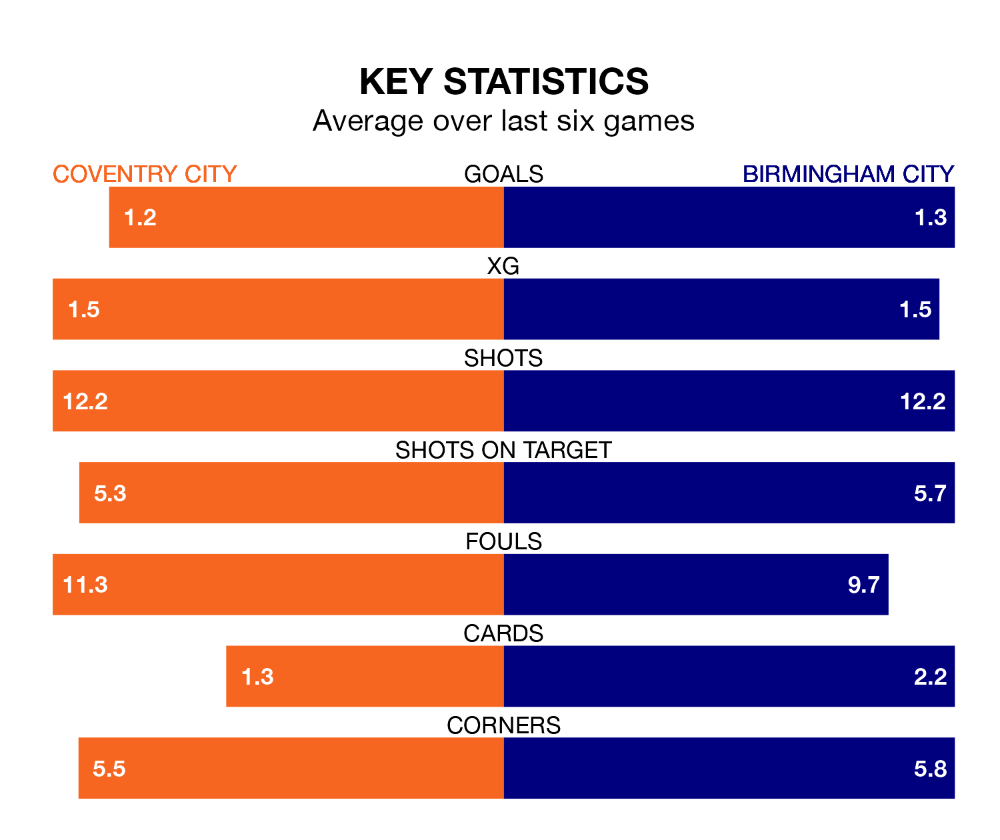

Coventry City are heavy favourites to keep all three points at home in Friday's late kick-off against Birmingham City.
The Sky Blues, who sit 17th in the Championship with 19 games played, are priced at 1.6 to seal victory at the Coventry Building Society Arena.
Despite sitting two places and one point ahead of them in the table, Birmingham are 5.5 to win with *Betting Company*, while the draw is at 3.8.
In the last 10 years, Coventry and Birmingham have played each other on eight occasions. Coventry won two of them and they drew six times.
On average, the Sky Blues scored 1.1 goals and the Blues 0.6 in those matches.
Their last meeting was on April 29, when Coventry won 2-0 at home.
Coventry are in mixed form in the Championship, with two wins and a draw from their last six games.
With a win and two draws over that period, Birmingham's form is slightly worse – they have taken five points from 18, compared to Coventry City's seven.
With 23 goals in 19 games so far this season, Birmingham City are scoring at below the league average rate with 1.2 goals per game. And they are conceding at an average rate, letting in 27 goals at a rate of 1.4 per game.
The Sky Blues are also below average scorers, with 1.3 goals per game, compared to a league average of 1.4. They have conceded 1.2 goals per game.
Coventry's last match was on Saturday, a 2-1 loss against Ipswich Town.
Birmingham drew 0-0 with Rotherham United last time out, also on Saturday.
